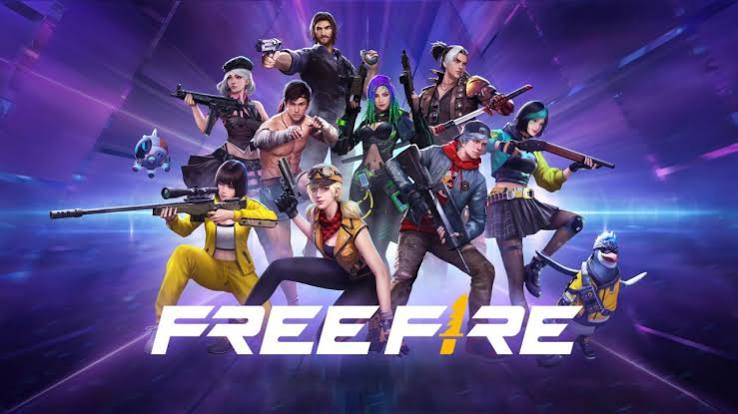
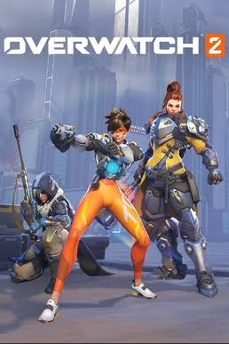
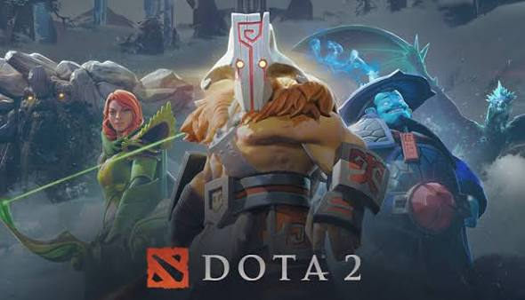

Fortnite
Um Battle Royale onde jogadores competem para ser o último sobrevivente em um mapa que está sempre mudando. Construção, estratégia e combate se misturam em partidas rápidas e imprevisíveis.

Counter-Strike 2
Um FPS tático onde duas equipes se enfrentam em partidas baseadas em estratégia, precisão e trabalho em equipe. Cada rodada pode mudar o resultado da partida, tornando decisões rápidas e comunicação essenciais.

Rocket league
Um jogo que combina futebol e carros em partidas cheias de velocidade e habilidade. Os jogadores precisam trabalhar em equipe para marcar gols e controlar a bola pela arena.

Valorant
Um FPS tático onde duas equipes usam armas e habilidades únicas para conquistar seus objetivos. Estratégia, precisão e trabalho em equipe são fundamentais para vencer cada rodada.

League of Legends
Um MOBA onde duas equipes de cinco jogadores batalham para destruir a base adversária. Cada partida exige estratégia, comunicação e domínio dos diferentes campeões.

Rainbow Six Siege
Um FPS tático focado em estratégia, comunicação e operações entre equipes. Ataque e defesa precisam planejar cada movimento para garantir a vitória.

Free Fire
Um Battle Royale de partidas rápidas onde jogadores lutam para ser o último sobrevivente. Estratégia, posicionamento e decisões rápidas fazem a diferença durante o combate.

Overwatch 2
Um jogo de tiro em equipe com personagens que possuem habilidades e funções diferentes. Cada partida exige cooperação e boas estratégias para conquistar os objetivos.

Dota 2
Um MOBA competitivo onde duas equipes enfrentam-se em batalhas estratégicas. Os jogadores precisam trabalhar juntos e usar as habilidades de seus heróis para destruir a base inimiga.